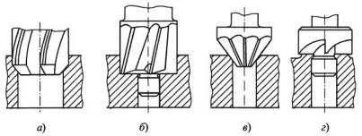

Зенкеры - это осевые многолезвийные режущие инструменты, которые применяются для промежуточной или окончательной обработки отверстий, полученных предварительно сверлением, литьем, ковкой или штамповкой, с целью повышения их точности до JT11...JT10 и уменьшения шероховатости обработанной поверхности до Ra 40.. 10.
Зенкеры получили широкое распространение в массовом и крупносерийном производствах. По сравнению с расточными резцами они, являясь мерными инструментами, не требуют настройки на размер, что обеспечивает сокращение вспомогательного времени и повышает точность отверстий.
Кинематика рабочих движений зенкеров подобна сверлам. Однако по сравнению с последними зенкеры обеспечивают большие производительность обработки отверстий и точность, так как снимают меньшие припуски (t = 1,5...4,0 мм, d = 18...80 мм), имеют большее число режущих кромок (z = 3...4) и направляющих ленточек. Из-за малой глубины стружечных канавок они имеют большую, чем сверла, жесткость, а отсутствие поперечной кромки позволяет вести обработку с более высокими подачами.